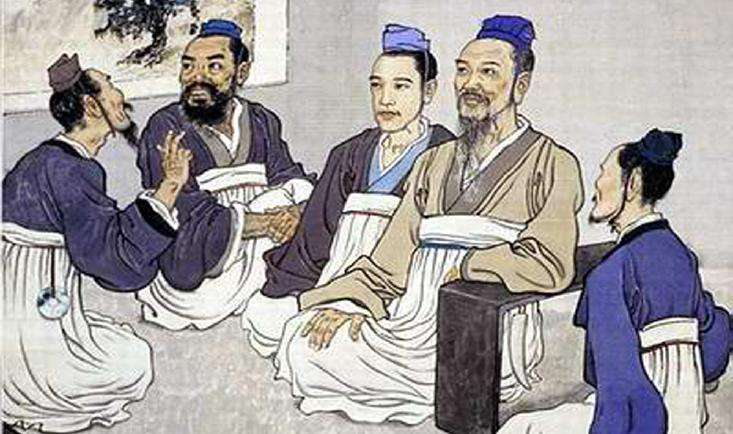
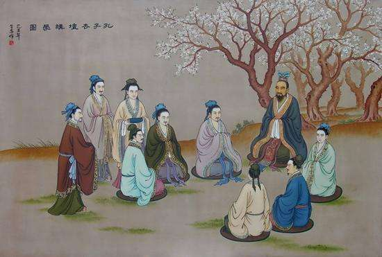

孔子
作者：Cindy 日期：2017-5-16
近代以来评孔
自1840年鸦片战争后，中国近代社会经历了空前的民族灾难和巨大的社会变革，制约和影响着思想文化领域里的斗争。围绕如何评价孔子及其儒学的争论，不仅有学术意义，而且反映了各个不同阶级、阶层的政治、经济利益。
洪秀全及其领导的太平天国革命运动，不但以物质武器批判了清王朝的封建统治秩序，而且从思想上冲击了一切束缚人民的绳索。但是由于农民阶级的局限性，他并未完全摆脱儒家纲常思想的影响。
早期改良派目睹当时中国严重的民族危机，关心时政，热心西学，提出了“器变道不变”的“中体西用”思维模式。
甲午战争后，面临列强瓜分中国的危局，资产阶级维新派倡导变法运动。
资产阶级革命派展开了猛烈的批判，并发动革命与改良之辩，深化了近代评孔运动。
辛亥革命后在意识形态领域里出现了尊孔复古的逆流。
辛亥革命失败的教训，使当时一些资产阶级民主激进分子认识到，资产阶级共和制度未能建立，其根本原因在于没有触动旧思想、旧道德。
五四以后，围绕评孔问题的争论仍一直继续，最后由毛泽东作了科学的总结，提出：“中国长期封建社会中，创造了灿烂的古代文化。清理古代文化的发展过程，剔除其封建性的糟粕，吸收其民主性的精华，是发展民族新文化提高民族自信心的必要条件；但决不能无批判地兼收并蓄。必须将古代封建统治阶级的一切腐朽的东西和古代优秀的人民文化即多少带有民主性和革命性的东西区别开来。”“对于中国古代文化，同样，既不是一概排斥，也不是盲目搬用，而是批判地接收它，以利于推进中国的新文化。”并强调“从孔夫子到孙中山，我们应当给以总结，承继这一份珍贵的遗产。”阐明了马克思主义者评孔的应持态度和方法。
台港评孔
1.现代新儒家产生于20世纪20年代初，力图恢复儒家思想的主导地位，重建儒家的价值系统，并以此为基础吸纳、融合、会通西学，以谋求中国文化和社会现代化的一个学术思想流派。
2.儒家资本主义又称“第三种现代化模式”或“东亚工业文明”。现代新儒家设想的以儒家文化为背景或以儒家思想为指导来实现资本主义现代化的发展道路或模式。
3.儒学第三期发展，现代新儒家对儒学的现今发展阶段和可以展望的未来前景，及其在儒学发展史中的地位所提出的一种看法